Keep track of your own progress.
A course teaches a new figure every week, and by the last week the first ones have faded. Film each figure while it's fresh, add the teacher's tips, and keep a reference you can come back to long after the course ends.


Start with what you learned this week
-
Start a list for your dance
Pick a template with a few starter figures, or a blank list. Not sure yet? Open the example: a West Coast Swing group's list after two beginner courses and a festival.
-
Add each figure as it comes
Name, type, counts and rhythm, level, notes, your videos from class, and the figures it builds on. Tag it with the course or the festival weekend you learned it at.
-
Look back before the next class
Find a figure in the list, see where it fits on the map, or flick through your videos as reels.
One list, three ways to see it
Open a list and the bar at the bottom switches between three views of the same figures. The menu holds everything else: your other lists, and Settings.
- List Every figure with its type and level. Sort it, filter it, open one for the details.
- Map Which figure builds on which, as a timeline or a network.
- Reels The videos of your figures, one per screen.
Open a figure and you get its counts and rhythm (1 2 3&4 5&6 for a six-count West Coast Swing pattern), its notes, its videos and its variations.


Two views of one map
On the Map tab, the timeline gives each pattern type its own lane and flows left to right by how far a pattern is from the foundations. The network is a zoomable graph you can pan, pinch and arrange by hand.
- Colours show the pattern type, shading shows the level
- Badges show which patterns have videos or variations
- Drag nodes into your own arrangement. DPM remembers it for each list
- Tap any pattern to open its details and videos


Back from a festival weekend
More figures than you can remember? Tag them with the festival, filter for the tag in the weeks after, and you see each new figure together with the ones it builds on.
Filter by name, type, level, counts or tags. On the map, the filter doesn't just hide what doesn't match. It can keep the path that leads to a match, or everything connected to it, in view. The matches stay bright and the rest fades back.
The same filter works on the list, alongside sorting by name, type, level, counts or date added.


Variations without duplicates
"With an inside turn", "with a free spin", "hesitation": modifiers change how a pattern is danced without making it a new pattern. Each one comes before, after or within the pattern it's attached to.
- Universal modifiers apply to every pattern in the list and can carry demo videos of their own
- Others attach to individual patterns and can carry their own demo videos per pattern: that pattern danced that way
- A modifier's page lists every pattern it's used with
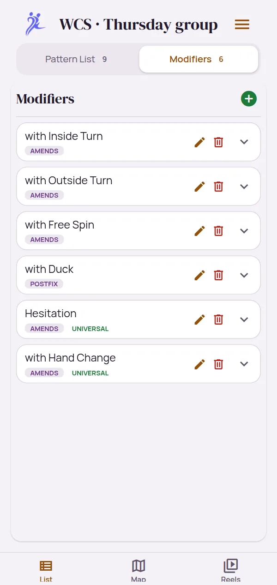
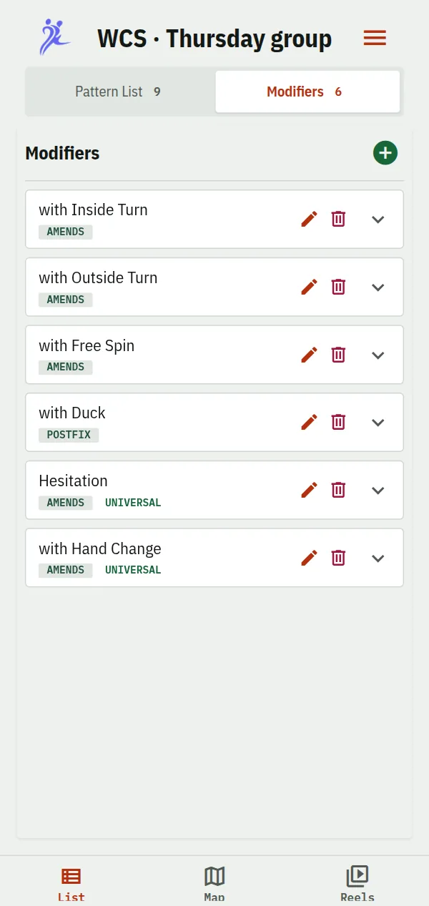
Reels: your figures, one video at a time
The Reels tab gathers every pattern that has a video. The overview shows a still of each; tap one to watch them one per screen. Swipe up or down to the next pattern, and sideways through its videos: its own first, then those of it danced with a modifier.
- Reels from the list you have open, or from every list on your phone
- The phone's own video controls, with fullscreen in landscape
- Back to the overview with the grid button, or with Android's back
Before class or a social, flick through what you've learned so far.


Your class videos, put to work
Attach videos to any pattern: a clip from your gallery, a new recording, or a link that starts at the right second. Then let DPM help with the tedious part:
- Shorten a long recording to just the pattern
- Anonymize a clip of up to 30 seconds: turn the dancers into coloured silhouettes, or keep them as filmed with their faces covered, so everyone in it can be comfortable with it being shared
- Transcribe what the teacher says, then tap a line to jump to it, correct it, or copy the lines you want to your notes
- Suggest a name and description from that transcript. You decide whether to use it
All of it runs on the phone. The speech and language models download once, and your videos never leave the device. All four tools are available on Android first. DPM doesn't come with videos: every clip is one you recorded, or a link you added.
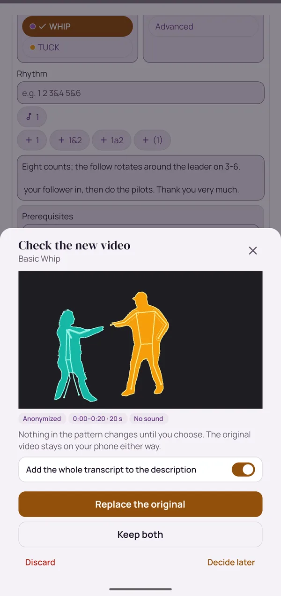
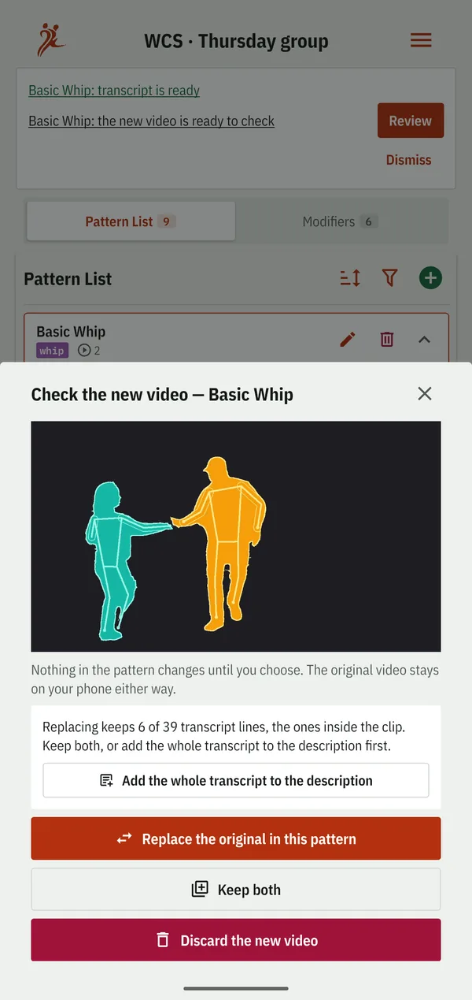
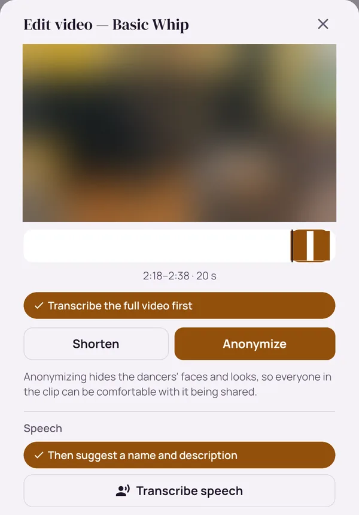
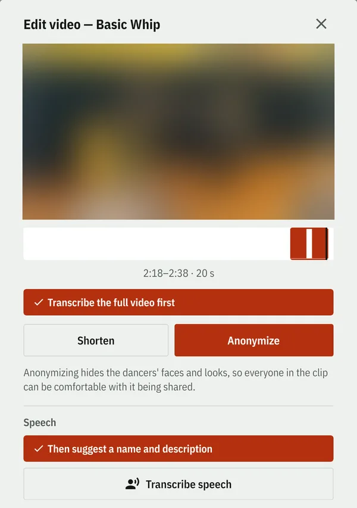
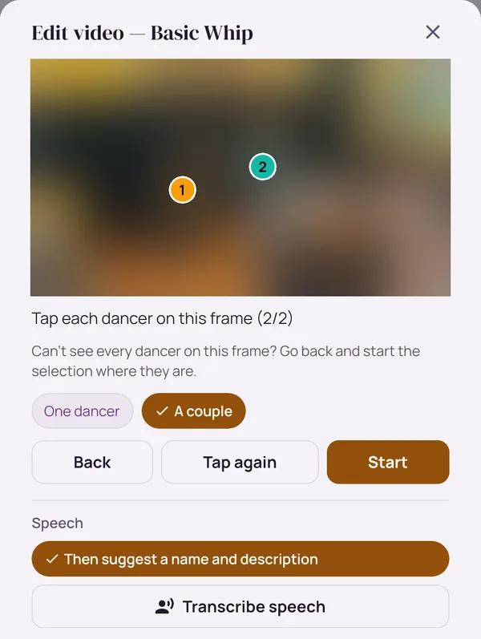
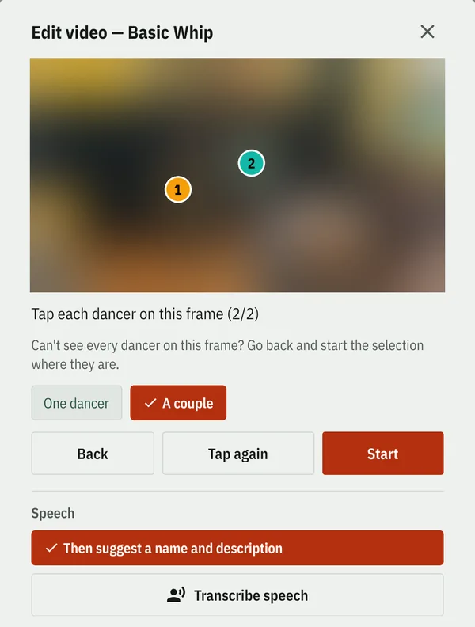
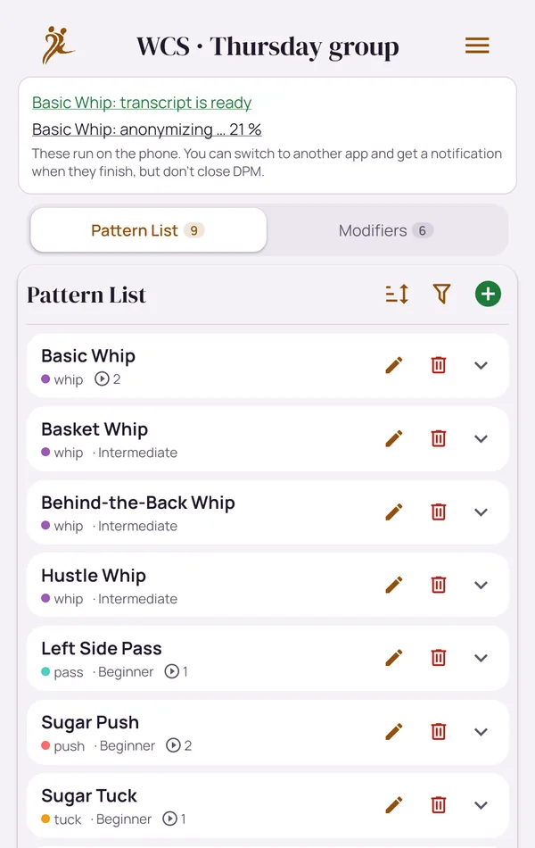
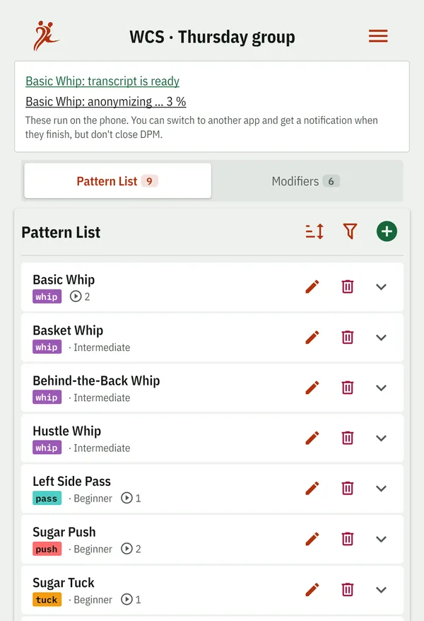
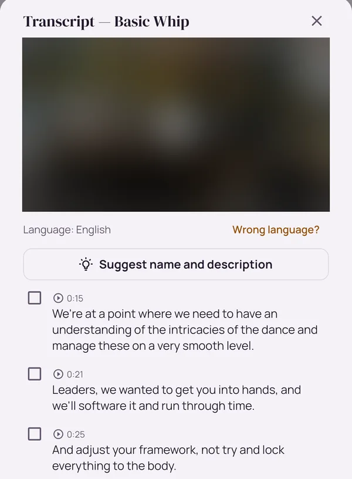
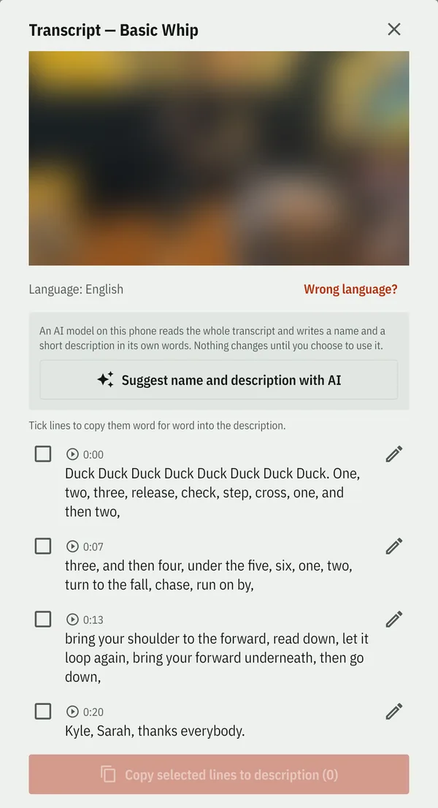
Questions
How should I use tags?
One tag per course, such as "Beginners 2", or per festival weekend. A course teaches about one figure a week, so a tag per week would hold a single figure. With a tag per course, one list can keep growing over years of classes.
Where do my videos go?
Nowhere, unless you send them. Videos stay on your device, and an export includes them only if you choose.
Does the AI send my videos to a server?
No. Anonymizing, transcribing and suggesting all run on the phone. The models download once (Wi-Fi recommended), and you can delete them in Settings.
How do I keep a backup?
Your lists live on your phone, so export them now and then, with or without their videos. Importing the file brings them back, and imports are checked before anything is written, so a damaged file can't half-overwrite your data.
Read on
One list for your class
Classmates or friends follow one list that one of you keeps, and take turns filming.
Read more → As a teacherYour course material, under your control
Decide who gets in, what your students may add and who can watch your videos.
Read more → As a studentYour teacher's list on your phone
What to expect from a course list, and how to subscribe with a code.
Read more →